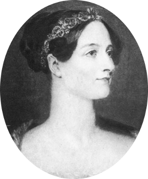

Nosso Professor
Ada Augusta King

-

Natural de Londres, Reino Unido.
-

É reconhecida por ser a primeira pessoa a construir um algoritmo de computação.
-

Ada Lovelace não frequentou escolas ou universidades formais.
Sobre mim
Ada nasceu em 10 de dezembro de 1815 em Londres, na Inglaterra. Ela aprendeu matemática e lógica com sua mãe, Anne Isabella. Na juventude, começou a trabalhar com o matemático Charles Babbage que estava desenvolvendo uma máquina analítica. Em 1842, ela traduziu o artigo sobre o funcionamento da máquina analítica para Babbage e acrescentou anotações de sua própria autoria maiores que o próprio artigo. Dentre essas anotações, ela escreveu o primeiro programa da história: um algoritmo para calcular a sequência de Bernoulli.